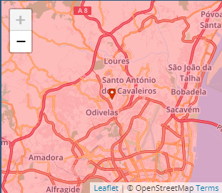
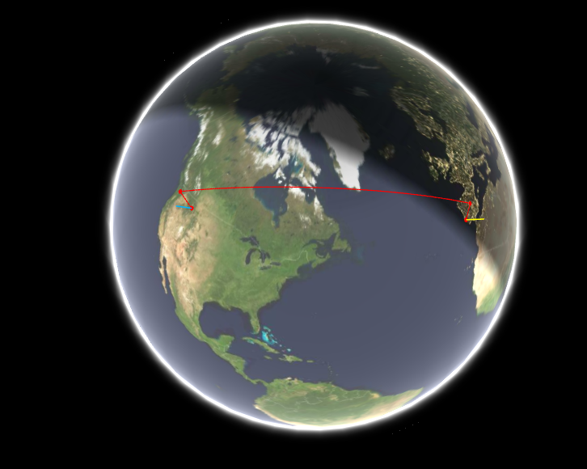
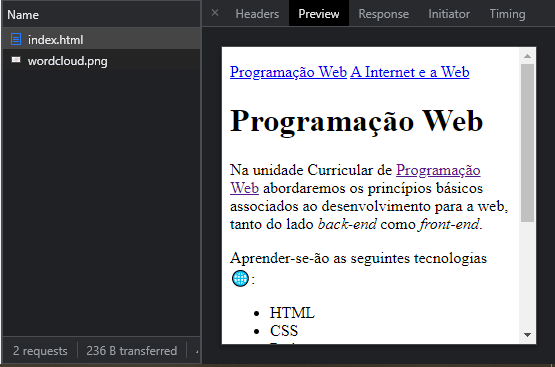
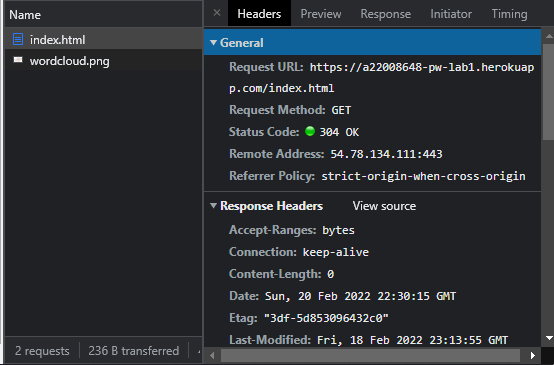
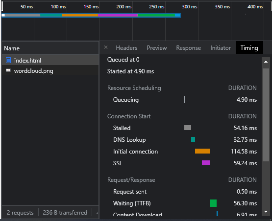

Programação Web A Internet e a Web Laboratórios PW
Obter um endereço IP é muito simples, basta pesquisar no Google "What is my IP" ou podemos usar a ferramenta https://whatismyipaddress.com/ip-lookup para obter o próprio endereço IP.
Meu endereço IP:
É possível também rastrear a rota que os pacotes IP fazem, desde o seu computador até um IP destino/URL específico. Esta ferramenta identifica os routers pelos quais os pacotes passam até ao seu destino, indicando o tempo que demoram por "salto" entre router. Neste caso, foi utilizada a ferramenta GeoTraceroute:

O protocolo de troca de mensagens entre um cliente e um servidor Web é o HTTP. Um Web browser (Chrome, Safari, Firefox, etc) é uma aplicação que corre numa máquina "cliente" (o seu portátil por exemplo) e é capaz de enviar um pedido usando o protocolo HTTP a um servidor Web.
Todos os browsers têm uma ferramenta (browser developer tool) permitindo inspeccionar os focheiros carregados
e também analisar uma grande variedade de informação.
Ao inspeccionar uma página, abrir a aba network
e recarregar a página, consegue-se visualizar os ficheiros carregados, tal como é mostrado na imagem:
Ao selecionar cada ficheiro carregado, é possível obter mais informações sobre eles, neste caso, conseguimos ter uma pré-visualização do ficheiro selecionado
Neste caso, na opção headers é possível obter várias informações no geral, tais como o método do pedido (GET), o endereço remoto, etc.
Na opção timing é possível saber o tempo que o ficheiro selecionado levou a fazer cada ação.
